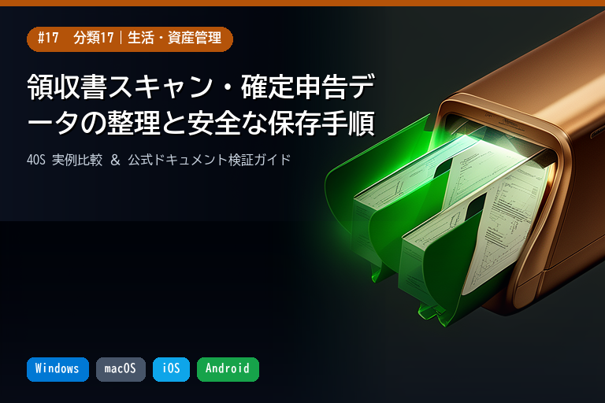

#17｜分類17: 生活・行政手続き・家計・資産管理 2026-11-23

領収書スキャン・確定申告データの整理と安全な保存手順｜Windows・macOS・iOS・Android
「電子帳簿保存法」の改正により、紙の領収書をデジタルデータとして保存することが義務化されました。しかし、「どのアプリを使えばいいのか？」「スマホで撮っただけで証拠として認められるのか？」「セキュリティは大丈夫か？」と不安を感じている方も多いはずです。
この記事では、Windows、macOS、iOS、Androidの4つの主要OSごとに、標準機能を活用した「領収書スキャンから確定申告データの整理・安全な保存」までの実践的なフローを徹底解説します。この記事を読めば、デバイスごとの特性を活かした最適な管理体制を構築できるようになります。
4OS比較早見表
| 機能 | Windows 11 | macOS | iOS (iPhone/iPad) | Android |
|---|---|---|---|---|
| 主なスキャン手段 | Windows スキャナー / Microsoft Lens | 「メモ」アプリ / 「ファイル」アプリ | 「メモ」アプリ / 「ファイル」アプリ | Google ドライブ統合カメラ |
| ストレージ連携 | OneDrive / 外部HDD | iCloud / Time Machine | iCloud / Google Drive | Google ドライブ / Google フォト |
| OCR（文字認識） | 標準機能では制限あり | 標準機能では制限あり | 標準機能では制限あり | Google レンズ連携で対応可 |
| 得意な用途 | 大量の一括処理・会計ソフト連携 | Appleエコシステム内での整理 | 現場での即時スキャン・撮影 | Googleサービスとのシームレスな同期 |
1. Windows 11 での実例手順
Windows環境では、PCの処理能力を活かした「一括処理」と「会計ソフトへの自動連携」を中心としたアプローチが適しています。
標準機能に基づく実例手順
- 領収書スキャン:
- USBスキャナーを使用する場合：「スタート」→「設定」→「Bluetooth とデバイス」→「その他の Bluetooth デバイス」でスキャナーを追加し、「Windows スキャナー」アプリから操作します。
- カメラを利用する場合：Microsoft Storeから公式アプリ『Microsoft Lens』をインストールして使用します。撮影した画像は自動的にPDFへ変換可能です。
- データ整理と保存:
- 「ファイルエクスプローラー」を開き、スキャンしたPDFを「ドキュメント」フォルダ内に作成したサブフォルダ（例：2024年_交通費、2024年_通信費）へ移動させます。
- 会計ソフト連携:
- 『マネーフォワード』や『freee』などの公式クライアントアプリをインストールし、APIを通じてスキャンデータを自動同期させる設定を行います。
- 安全な長期保存:
- 個別のファイル暗号化には標準メニューがないため、OneDrive for Business/Personalへ同期するか、外部HDDにコピーした上で「ZIP圧縮＋パスワード付与」を行い保管します。
標準機能の制限事項
- 画像認識精度: 「Windows スキャナー」や「Microsoft Lens」は光学スキャン用であり、手書き文字や複雑なレイアウトの自動OCR変換には限界があります。検索性を高めるには別途テキスト入力が必要です。
- 暗号化標準機能不足: BitLockerはボリューム単位の暗号化であるため、単一のPDFファイルにパスワードをかけるにはPowerShellやサードパーティツールが必要です。
よくあるトラブルと解決法
- トラブル①：スキャン画像が白黒で読み取りエラーになる
- 原因：カメラ設定の「カラー」ではなくモノクロになっている、または照明不足。
- 解決: 「Microsoft Lens」の設定から「色付き（Color）」を選択し、明るい場所で撮影してください。
- トラブル②：PDF ファイルを開くと「形式が正しくありません」と表示される
- 原因：スキャン時の圧縮率が高すぎるか、互換性のないPDFバージョンが生成された可能性。
- 解決: 「Microsoft Edge」ブラウザで開き、「印刷→PDFに保存」を選択して再フォーマットしてください。
- トラブル③：バックアップ先（OneDrive など）に同期せず、ファイルが消える
- 原因：ネットワーク断絶や「オンデマンド」設定による非表示化。
- 解決: OneDriveの設定で「PCに保存する場所を同期（Sync）」オプションを確認し、フォルダ全体をローカルに展開してください。
2. macOS での実例手順
macOSでは、Apple独自の「メモ」アプリやiCloudとの高度な連携を活かしたスムーズな管理が可能です。
標準機能に基づく実例手順
- 領収書スキャン:
- 「メモ」アプリを開き、新規作成→「カメラアイコン」をタップして撮影します。アプリ内で自動的にPDFとして保存されます。
- スキャナーを使用する場合：「ファイル」アプリのメニューバーから「イメージ」を選択し、接続したスキャナーを使用します。
- データ整理と保存:
- 「Finder」上で作成されたPDFを「iCloud ドライブ」内のフォルダへ移動させます。「タグ機能」を使って色分け管理を行うのが非常に効率的です。
- 会計ソフト連携:
- 『Money Forward』や『freee for Mac』の公式アプリを起動し、MacOSの標準ファイルシステムからデータを読み込む設定を行います。
- 安全な長期保存:
- 「Time Machine」を使用して外付けHDDに定期的なバックアップを作成します。
標準機能の制限事項
- OCR 機能非搭載: macOSの標準アプリ（メモ・ファイル）はスキャン画像をテキストとして認識しません。「PDFに変換しても中身が画像のまま」となるため、後からのキーワード検索には注意が必要です。
- 暗号化の複雑さ: FileVaultによる全ディスク暗号化は標準ですが、個別PDFへのパスワード付与は標準機能では行えません（Keychain利用は限定的）。
よくあるトラブルと解決法
- トラブル①：スキャン画像が歪んで文字認識できない
- 原因：「メモ」アプリの撮影時に手ぶれや角度が悪い。
- 解決: 「写真」アプリで編集機能を使い、直線補正（トリミング・回転）を適用して水平に整えてからPDFへ変換してください。
- トラブル②：iCloud ドライブ上のファイルを他の PC で見られない
- 原因：「共有リンク」の設定オフ、または同期設定のデバイス制限。
- 解決: 「Finder」→「共有」タブからアクセス権限を確認するか、必要に応じてZIP圧縮＋パスワード付与をして外部へ渡してください。
- トラブル③：Time Machine バックアップから特定の領収書を探すのが困難
- 原因：バックアップはシステム全体の状態を記録するため、個別ファイルの抽出に時間がかかる。
- 解決: 「Spotlight」検索で「.pdf」とキーワード（店舗名等）を組み合わせて検索し、該当ファイルを抽出する手順を習慣化してください。
3. iOS（iPhone / iPad）での実例手順
モバイルデバイスは「現場での即時スキャン」に特化したアプローチが最適です。
標準機能に基づく実例手順
- 領収書スキャン:
- 「メモ」アプリを開き、新規作成→「カメラアイコン」をタップして撮影します。自動でPDFとして保存されます。
- または、「写真」アプリから画像を選択し、「共有」→「PDFを作成」を実行します。
- データ整理と保存:
- 「ファイル」アプリ（iCloud ドライブ）にスキャンしたPDFを格納します。「タグ機能」で色分けしてカテゴリ別に見やすく管理します。
- 会計ソフト連携:
- 『Money Forward』や『freee for iOS』の公式アプリをインストールし、「写真アルバム」と「ファイル」からデータを自動取り込みます。
- 安全な長期保存:
- 「iCloud ドライブ」に常時同期させつつ、重要な確定申告データはGoogle Driveなどの外部クラウドにもバックアップを取ります。
標準機能の制限事項
- OCR の非搭載: iOSの標準アプリ「メモ」「写真」はスキャン画像をテキストとして認識しません。検索性を高めるには『Microsoft Lens』や『Adobe Scan』などのサードパーティ製公式アプリの使用を推奨します。
- 暗号化の複雑さ: 「ファイル」アプリ自体にパスワードをかける機能はありません。個別PDFへのパスワード付与は標準機能では行えません。
よくあるトラブルと解決法
- トラブル①：スキャン画像が歪んで文字認識できない
- 原因：「メモ」アプリのカメラ撮影時に手ぶれや角度が悪い。
- 解決: 「写真」アプリで編集機能を使い、直線補正ツールを適用して水平に整えてからPDFへ変換してください。
- トラブル②：iCloud ドライブ上のファイルを他の PC で見られない
- 原因：「共有リンク」の設定オフ、または同期設定のデバイス制限。
- 解決: 「Finder（Mac）」や「ブラウザ（PC）」からiCloudにログインし、権限を確認してください。
4. Android での実例手順
AndroidではGoogleエコシステムとの親和性を活かしたフローが非常に強力です。
標準機能に基づく実例手順
- 領収書スキャン:
- 「Google ドライブ」アプリを開き、右下の「＋」ボタンから「スキャン」を選択します。カメラで撮影すると自動的にPDFとしてドライブに保存されます。
- データ整理と保存:
- Google ドライブ内のフォルダ構造（例：2024年_経費）に分類します。Google ドライブの検索機能は強力なため、ファイル名に「店舗名」や「日付」を入れることで容易に抽出可能です。
- 会計ソフト連携:
- 『マネーフォワード』などの公式アプリをインストールし、Google ドライブと連携させることで、スキャンしたデータをスムーズに取り込みます。
- 安全な長期保存:
- Google ドライブの「オフラインで使用可能」設定を活用するか、重要なデータは別途外部ストレージへバックアップします。
標準機能の制限事項
- OCR の非搭載: 基本的なドライブスキャンではテキスト認識が弱い場合があります。Google レンズを併用することで解決可能です。
- 暗号化の複雑さ: 個別PDFへのパスワード付与は標準メニューからは行えません。
よくあるトラブルと解決法
- トラブル①：スキャン画像が歪んで文字認識できない
- 原因：撮影時の手ぶれや角度の不備。
- 解決: Google ドライブのスキャン機能では、自動で角を検知する機能があるため、少し離れて全体を写すように意識してください。
- トラブル②：Google ドライブ上のファイルが同期されない
- 原因：アプリのバックグラウンド更新制限やネットワークの問題。
- 解決: Google ドライブアプリの設定から「バックグラウンドデータ」を許可し、Wi-Fi環境で同期を確認してください。
よくあるトラブルと解決チェックリスト
| トラブル事象 | 推定原因 | 対処法・解決策 |
|---|---|---|
| スキャン画像が白黒で読み取りエラー | カメラ設定のカラーオフ、または照明不足。 | 「Microsoft Lens」等のアプリで「色付き（Color）」を選択し、明るい場所で撮影する。 |
| PDFを開くと「形式が正しくありません」と表示 | 圧縮率が高すぎる、または互換性のないバージョン。 | ブラウザ（Edge等）で開き、「印刷→PDFに保存」で再フォーマットする。 |
| バックアップ先（OneDrive/iCloud）に同期しない | ネットワーク断絶や「オンデマンド」設定の誤解。 | 同期オプションを「ローカル展開」に変更するか、手動で外部HDDへコピーする。 |
| スキャンしたPDFの中身が検索できない | 標準アプリによるOCR（文字認識）未対応。 | 『Microsoft Lens』や『Adobe Scan』など、OCR機能を持つ公式ツールを導入する。 |
まとめ：快適なマルチOS環境を作るポイント
領収書のスキャンと確定申告データの管理は、「いかに手間を減らし、かつ安全に保存するか」のバランスが重要です。各OSの標準機能を使いこなすことで、基本的なデジタル化は十分可能ですが、より高度で効率的な運用を目指すなら以下のツール導入を検討してみてください。
- ICカードリーダー（e-Tax対応）: PCでの確定申告作業をスムーズにするための必須アイテムです。
- 会計ソフト（マネーフォワード / freee 等）: スキャンしたデータを自動で仕訳する仕組みを作ることで、手入力のミスと時間を劇的に削減できます。
- 家計管理アプリ: 日々の支出をスマホで記録し、確定申告前の「予備調査」として活用するのがおすすめです。
- モバイルスキャナー（または公式スキャンアプリ）: 現場ですぐに高品質なPDFを作成できる環境を整えることで、後々の「紙の整理」という苦行から解放されます。
デバイスごとの特性（Windowsの一括処理、iOSの機動性など）を理解し、自分に合ったフローを構築することで、ストレスのない資産管理を実現しましょう。
参考文献・公式ドキュメント（一次情報ソース）
本記事の手順・仕様は以下の各OSおよびツールの公式ドキュメントに基づいています。OSアップデートによりメニュー名称や挙動が変わる場合があるため、最新仕様の確認にもご活用ください。
- [日本公式（税務）] 電子帳簿保存法関係（領収書・電子取引データの保存要件） - 国税庁
- [Windows] Windows で PC をバックアップおよび復元する - Microsoft サポート
- [macOS / iOS] iPhoneやiPadで書類をスキャンする方法 - Apple サポート (日本)
- [Android] Google ドライブでドキュメントをスキャンする - Google ドライブ ヘルプ